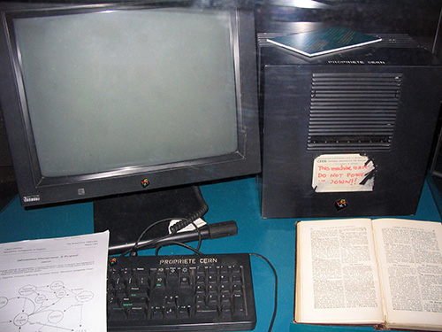

World Wide Web
En informática, la World Wide Web (WWW) o Red informática Mundial comúnmente conocida como la Web, es un sistema de distribución de documentos de hipertexto o hipermedios interconectados y accesibles vía Internet. Con un navegador web, un usuario visualiza sitios web compuestos de páginas web que pueden contener texto, imágenes, vídeos u otros contenidos multimedia, y navega a través de esas páginas usando hiperenlaces.
La Web se desarrolló entre marzo de 1989 y diciembre de 1990 por el inglés Tim Berners-Lee con la ayuda del belga Robert Cailliau mientras trabajaban en el CERN en Ginebra, Suiza, y publicado en 1992. Desde entonces, Berners-Lee ha jugado un papel activo guiando el desarrollo de estándares Web (como los lenguajes de marcado con los que se crean las páginas web), y en los últimos años ha abogado por su visión de una Web semántica. Utilizando los conceptos de sus anteriores sistemas de hipertexto como ENQUIRE, el ingeniero británico Tim Berners-Lee, un científico de la computación y en ese tiempo de los empleados del CERN, ahora director del World Wide Web Consortium (W3C), escribió una propuesta en marzo de 1989 con lo que se convertiría en la World Wide Web. la propuesta de 1989 fue destinada a un sistema de comunicación CERN pero Berners-Lee finalmente se dio cuenta que el concepto podría aplicarse en todo el mundo. En la CERN, la organización europea de investigación cerca de Ginebra, en la frontera entre Francia y Suiza, Berners-Lee y el científico de la computación belga Robert Cailliau propusieron en 1990 utilizar el hipertexto "para vincular y acceder a información de diversos tipos como una red de nodos en los que el usuario puede navegar a voluntad", y Berners-Lee terminó el primer sitio web en diciembre de ese año. Berners-Lee publicó el proyecto en el grupo de noticias alt.hypertext el 7 de agosto de 1991.
Índice
- Historia
- Funcionamiento de la Web
- Estándares web
Historia
En el número de mayo de 1970 de la revista Popular Science, Arthur C. Clarke predijo que algún día los satélites "llevarán el conocimiento acumulado del mundo a sus manos" con una consola que combinara la funcionalidad de la fotocopiadora, teléfono, televisión y un pequeño ordenador, que permitirá la transferencia de datos y videoconferencia en todo el mundo.
En marzo de 1989, Tim Berners-Lee escribió una propuesta que hace referencia ENQUIRE, una base de datos y proyectos de software que había construido en 1980, y describe un sistema de gestión de la información más elaborado.
La idea subyacente de la Web se remonta a la propuesta de Vannevar Bush en los años 40 sobre un sistema similar: a grandes rasgos, un entramado de información distribuida con una interfaz operativa que permitía el acceso tanto a la misma como a otros artículos relevantes determinados por claves. Este proyecto nunca fue materializado, quedando relegado al plano teórico bajo el nombre de Memex. Es en los años 50 cuando Ted Nelson realiza la primera referencia a un sistema de hipertexto, donde la información es enlazada de forma libre. Pero no es hasta 1980, con un soporte operativo tecnológico para la distribución de información en redes informáticas, cuando Tim Berners-Lee propone ENQUIRE al CERN (refiriéndose a Enquire Within Upon Everything, en castellano Preguntando de Todo Sobre Todo), donde se materializa la realización práctica de este concepto de incipientes nociones de la Web.
En marzo de 1989, Tim Berners Lee, ya como personal de la división DD del CERN, redacta la propuesta, que referenciaba a ENQUIRE y describía un sistema de gestión de información más elaborado. No hubo un bautizo oficial o un acuñamiento del término Web en esas referencias iniciales, utilizándose para tal efecto el término mesh. Sin embargo, el World Wide Web ya había nacido. Con la ayuda de Robert Cailliau, se publicó una propuesta más formal para la World Wide Web el 6 de agosto de 1991.
Berners-Lee usó un NeXTcube como el primer servidor web del mundo y también escribió el primer navegador web, WorldWideWeb en 1991. En las Navidades del mismo año, Berners-Lee había creado todas las herramientas necesarias para que una web funcionase: el primer navegador web (el cual también era un editor web), el primer servidor web y las primeras páginas web que al mismo tiempo describían el proyecto.
Este NeXTcube usado por Berners-Lee en el CERN se convirtió en el primer servidor web.
El 6 de agosto de 1991, envió un pequeño resumen del proyecto World Wide Web al newsgroup alt.hypertext. Esta fecha también señala el debut de la Web como un servicio disponible públicamente en Internet.
El concepto, subyacente y crucial, del hipertexto tiene sus orígenes en viejos proyectos de la década de los 60, como el Proyecto Xanadu de Ted Nelson y el sistema on-line NLS de Douglas Engelbart. Los dos, Nelson y Engelbart, estaban a su vez inspirados por el ya citado sistema basado en microfilm "memex", de Vannevar Bush.
El gran avance de Berners-Lee fue unir hipertexto e Internet. En su libro Weaving the Web (en castellano, Tejiendo la Red), explica que él había sugerido repetidamente que la unión entre las dos tecnologías era posible para miembros de las dos comunidades tecnológicas, pero como nadie aceptó su invitación, decidió, finalmente, hacer frente al proyecto él mismo. En el proceso, desarrolló un sistema de identificadores únicos globales para los recursos web y también: el Uniform Resource Identifier.
World Wide Web tenía algunas diferencias de los otros sistemas de hipertexto que estaban disponibles en aquel momento:
- WWW sólo requería enlaces unidireccionales en vez de los bidireccionales. Esto hacía posible que una persona enlazara a otro recurso sin necesidad de ninguna acción del propietario de ese recurso. Con ello se reducía significativamente la dificultad de implementar servidores web y navegadores (en comparación con los sistemas anteriores), pero en cambio presentaba el problema crónico de los enlaces rotos.
- A diferencia de sus predecesores, como HyperCard, World Wide Web era no-propietario, haciendo posible desarrollar servidores y clientes independientemente y añadir extensiones sin restricciones de licencia. El 30 de abril de 1993, el CERN presentó la World Wide Web de forma pública.
La primera página de Internet fue creada por Tim Berners-Lee en 1991 mediante un computador NeXT, el funcionamiento de esta como lo han sido todas las páginas de Internet era informar sobre la World Wide Web. En la página se define la hipermedia y muestra un ejemplo de como sería una página en hypertexto, se enseña como contribuir a la Web, menciona a las personas involucradas en ese proyecto, cómo se clasifica la información en la Web, los servidores y softwares que existían, enseña cómo insertar una bibliografía, proporciona la terminación de cada tipo de software que existe para así identificarlo más facilmente, menciona el nacimiento de la página, da a conocer el colisionador de partículas CERN, e incluso viene un manual de usuario para utilizar la World Wide Web y proporciona ayuda en línea en los softwares Line Mode Browser, NeXTStep y MidasWWW. Toda esta información se muestra en cuatro links en la página principal. Esta página web se abrió el 30 de abril de 1993, durante mucho tiempo dejó de existir esta página, pero la abrieron 20 años después el 30 de abril de 2013 como conmemoración del nacimiento de la tecnología web.
ViolaWWW fue un navegador bastante popular en los comienzos de la Web que estaba basado en el concepto de la herramienta hipertextual de software de Mac denominada HyperCard. Sin embargo, los investigadores generalmente están de acuerdo en que el punto de inflexión de la World Wide Web comenzó con la introducción del navegador web Mosaic en 1993, un navegador gráfico desarrollado por un equipo del NCSA en la Universidad de Illinois en Urbana-Champaign (NCSA-UIUC), dirigido por Marc Andreessen. El apoyo para desarrollar Mosaic vino del High-Performance Computing and Communications Initiative, un programa de fondos iniciado por el entonces gobernador Al Gore en el High Performance Computing and Communication Act of 1991, también conocida como la Gore Bill. Antes del lanzamiento de Mosaic, las páginas web no integraban un amplio entorno gráfico y su popularidad fue menor que otros protocolos anteriores ya en uso sobre Internet, como el protocolo Gopher y WAIS. La interfaz gráfica de usuario de Mosaic permitió a la WWW convertirse en el protocolo de Internet más popular de una manera fulgurante...
Funcionamiento de la Web
El primer paso consiste en traducir la parte nombre del servidor de la URL en una dirección IP usando la base de datos distribuida de Internet conocida como DNS. Esta dirección IP es necesaria para contactar con el servidor web y poder enviarle paquetes de datos.
El siguiente paso es enviar una petición HTTP al servidor web solicitando el recurso. En el caso de una página web típica, primero se solicita el texto HTML y luego es inmediatamente analizado por el navegador, el cual, después, hace peticiones adicionales para los gráficos y otros ficheros que formen parte de la página. Las estadísticas de popularidad de un sitio web normalmente están basadas en el número de páginas vistas o las peticiones de servidor asociadas, o peticiones de fichero, que tienen lugar.
Al recibir los ficheros solicitados desde el servidor web, el navegador renderiza la página tal y como se describe en el código HTML, el CSS y otros lenguajes web. Al final se incorporan las imágenes y otros recursos para producir la página que ve el usuario en su pantalla.
Estándares Web
Destacamos los siguientes estándares:
- el Identificador de Recurso Uniforme (URI), que es un sistema universal para referenciar recursos en la Web, como páginas web,
- el Protocolo de Transferencia de Hipertexto (HTTP), que especifica cómo se comunican el navegador y el servidor entre ellos,
- el Lenguaje de Marcado de Hipertexto (HTML), usado para definir la estructura y contenido de documentos de hipertexto,
- el Lenguaje de Marcado Extensible (XML), usado para describir la estructura de los documentos de texto.
Berners Lee dirige desde 2007 el World Wide Web Consortium (W3C), el cual desarrolla y mantiene esos y otros estándares que permiten a los ordenadores de la Web almacenar y comunicar efectivamente diferentes formas de información.